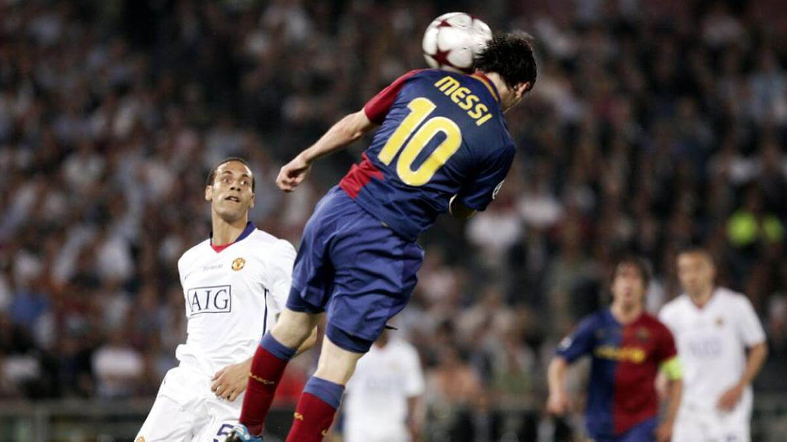
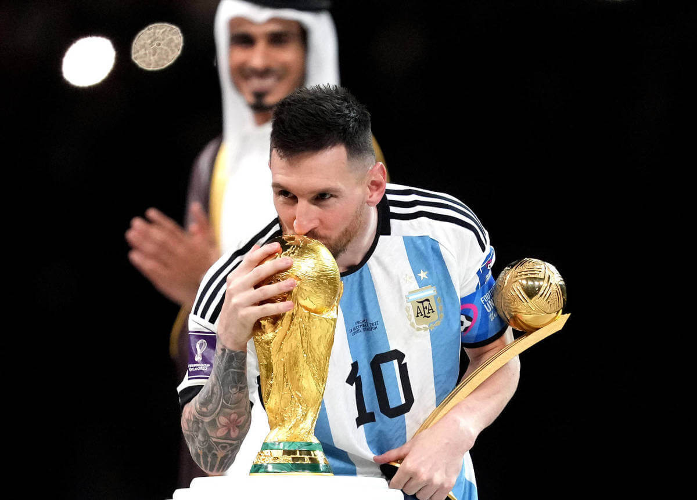
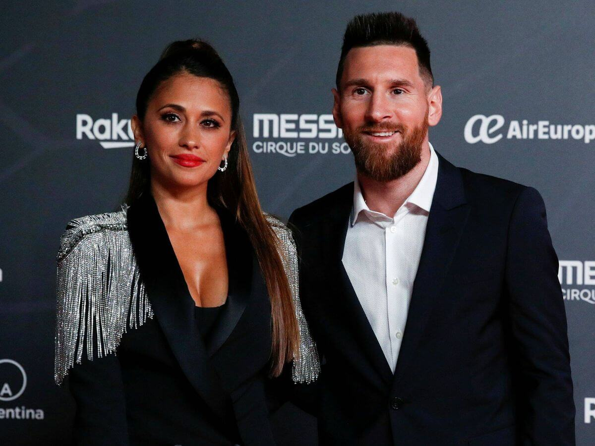

Lionel Andrés Messi Cuccittini un 24 de Junio de 1987 en Rosario, Santa Fe. Hijo de Jorge Messi Y Celia Cuccittini, empezó a jugar desde los 4 años a la pelota, en el club de barrio Abanderado Grandoli, para luego a los 8 años irse a Newell's Old Boys. Desde que era chico, era imparable, mejor que los niños de su edad, e inclusive mas grandes. Le diagnosticaron una deficiencia de la hormona de crecimiento, por lo cual pasó gran parte de su infancia inyectándose el medicamento para poder solventarlo. El 8 de enero de 2001, con 13 años fichó para el F.C. Barcelona, ingresando a la categoría infantil.
El 16 de noviembre de 2003, debuta con el primer equipo a la edad de 16 años, con el entrenador Frank Rijkaard. En 2005 gana la liga española y la Supercopa Española, y es llamado para jugar el mundial sub-20 para Argentina, el cual termina ganando. En 2006, juega su primer Champions League, metiendo 1 gol y 2 asistencias, ganandola pero sin jugar la final. También gana la liga y la copa española. En 2007 juega su primera Copa América con su selección, llegando a la final, aunque perdiéndola contra Brasil 0-3, siendo esta su primera derrota en una final con su selección. En 2008 es convocado para jugar los Juegos Olímpicos, ganando la medalla de oro.
En 2009 el Barcelona cambia de técnico a Pep Guardiola, empezando el llamado "Mejor equipo de la historia". Con Messi a la cabeza, son el primer equipo de la historia en ganar el sextete. Ese año, Messi gana La copa, la liga española, la Supercopa, la Champions League, la Supercopa de Europa y el Mundial de Clubes, coronando con su primer balón de oro. En 2010 gana la liga y la Supercopa de España, también gana su segundo balón de oro y su primer bota de oro. En 2011 casi vuelve a conseguir otro sextete, ganando la liga, la Supercopa, la Champions, la Supercopa de Europa y el Mundial de Clubes, lo que le da su tercer balón de oro.
En 2012 logra un hito histórico, es el primer jugador en llegar a los 91 goles en un año natural, superando el récord de Gerd Muller y Pele. Ese año gana la copa, la bota y balón de oro. En 2013 gana la liga española y la Supercopa, además de su tercera bota de oro.
En 2014, Messi juega el Mundial, llegando hasta la final perdiéndola contra Alemania 0-1, sienda esta su segunda derrota en finales con su Selección. En 2015 empieza su segunda era dorada, con la llegada de Neymar y Luis Suarez se forma la MSN, uno de los mejores tridentes ofensivos de la historia con los que ganó la liga, la copa, la Champions, la Supercopa de Europa y el Mundial de Clubes, lo que da su quinto balón de oro, siendo el primer jugador en llegar a esta cifra. Para su desgracia, ese año juega tambien la Copa América con su país, llegando a la final y perdiendo contra Chile en penales, su tercera derrota en una final con su Selección. En 2016 gana la liga, la copa española y la Supercopa de España. También juega la Copa América conmemorativa a los 100 años, la cual vuelve a llegar a la instancia final, pero termina perdiendo, nuevamente en penales, con esta llegando a 4 finales perdidas. Ese año, Messi hace publico su retiro de la Selección, luego de las fuertes críticas de la prensa argentina a su persona, aunque en un futuro vuelva.
En 2017 gana la Copa de España y su cuarta bota de oro. En 2018 juega el Mundial llegando a octavos perdiendo 4-3 contra Francia, la futura campeona. Gana la liga, la copa y Supercopa España, y su quinta bota de oro. En 2019 juega la Copa América llegando hasta la semifinal contra Brasil, perdiendo un partido cuestionable por parte de el arbitraje. Ese año gana la liga y hace una actuacion magistral en la Champions, llegando hasta la semifinal, lo que le da su sexta bota de oro, otro hito histórico, y su sexto balón de oro. En 2020 fue un año difícil, no gano nada con su club y su deseo de irse del Barcelona aumentaba de a poco. En 2021 juega en el Barcelona hasta junio, donde gana la copa, para luego retirarse hacia el PSG. Ese año juega con su Selección la Copa América, en la que nuevamente llega a la final contra Brasil, para después de 4 finales ganar 1-0 rompiendo su mala suerte, ganando su primer título con Argentina. Ese año gana su séptimo balón de oro consiguiendo otro récord histórico. En 2022, ya en el PSG, gana la Ligue 1 y la Supercopa de Francia. También juega el Mundial, haciendo una actuación asombrosa llegando a la final, y esta vez si, gana su primer Mundial y el tercero de la Selección.
Desde 2007 esta con Antonella Roccuzzo, la cual conoce desde que era un niño. En 2017 se casa con ella, con la cual ya tenía 2 hijos, a la espera de un tercero. Su primer hijo es Thiago, que nació en Barcelona el 2 de noviembre de 2012. El segundo fue Mateo, que nació el 11 de septiembre de 2015, en Barcelona. Y por último, su tercer hijo, Ciro, que nació el 11 de marzo de 2018.
